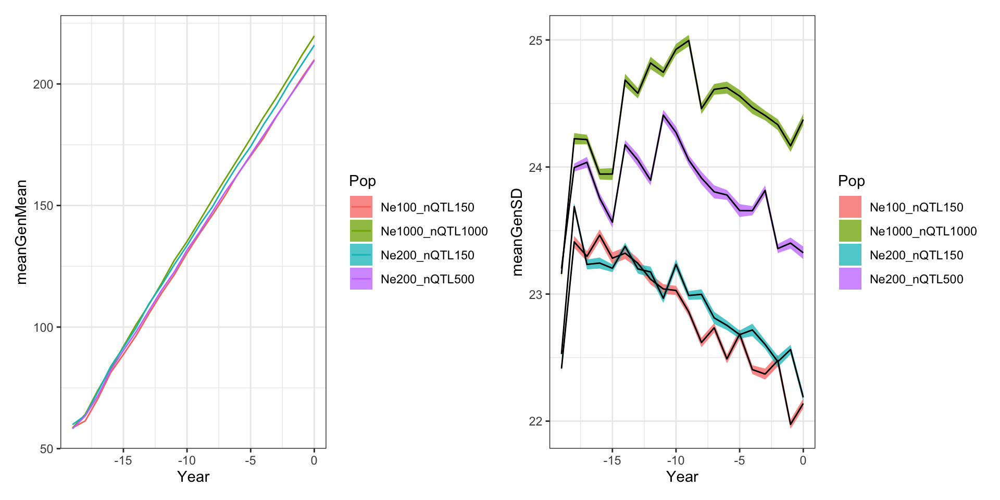

Burn-in simulations for cassava GS
Marnin Wolfe
2021-Aug-26
Last updated: 2021-08-29
Checks: 7 0
Knit directory: BreedingSchemeOpt/
This reproducible R Markdown analysis was created with workflowr (version 1.6.2). The Checks tab describes the reproducibility checks that were applied when the results were created. The Past versions tab lists the development history.
Great! Since the R Markdown file has been committed to the Git repository, you know the exact version of the code that produced these results.
Great job! The global environment was empty. Objects defined in the global environment can affect the analysis in your R Markdown file in unknown ways. For reproduciblity it’s best to always run the code in an empty environment.
The command set.seed(20210422) was run prior to running the code in the R Markdown file. Setting a seed ensures that any results that rely on randomness, e.g. subsampling or permutations, are reproducible.
Great job! Recording the operating system, R version, and package versions is critical for reproducibility.
Nice! There were no cached chunks for this analysis, so you can be confident that you successfully produced the results during this run.
Great job! Using relative paths to the files within your workflowr project makes it easier to run your code on other machines.
Great! You are using Git for version control. Tracking code development and connecting the code version to the results is critical for reproducibility.
The results in this page were generated with repository version 7bccac8. See the Past versions tab to see a history of the changes made to the R Markdown and HTML files.
Note that you need to be careful to ensure that all relevant files for the analysis have been committed to Git prior to generating the results (you can use wflow_publish or wflow_git_commit). workflowr only checks the R Markdown file, but you know if there are other scripts or data files that it depends on. Below is the status of the Git repository when the results were generated:
Ignored files:
Ignored: .DS_Store
Ignored: .Rhistory
Ignored: .Rproj.user/
Ignored: analysis/.DS_Store
Ignored: analysis/images/.DS_Store
Ignored: data/.DS_Store
Ignored: output/.DS_Store
Untracked files:
Untracked: data/baselineScheme.gsheet
Untracked: data/siErrorVarEst_byTrialType_directApproach_2021Aug25.rds
Untracked: output/benchmark_sim.rds
Untracked: output/benchmark_sims5.rds
Untracked: output/burnInSims_bsp1_iita_2021Aug27.rds
Untracked: output/burnInSims_bsp2_iita_2021Aug27.rds
Untracked: output/burnInSims_bsp3_iita_2021Aug27.rds
Untracked: output/burnInSims_iita_2021Aug27.rds
Untracked: output/burnIn_test.rds
Untracked: output/postBurnIn_test.rds
Untracked: output/test_burnIn_sim.rds
Unstaged changes:
Modified: analysis/baselineSim.Rmd
Note that any generated files, e.g. HTML, png, CSS, etc., are not included in this status report because it is ok for generated content to have uncommitted changes.
These are the previous versions of the repository in which changes were made to the R Markdown (analysis/burnInSims.Rmd) and HTML (docs/burnInSims.html) files. If you’ve configured a remote Git repository (see ?wflow_git_remote), click on the hyperlinks in the table below to view the files as they were in that past version.
| File | Version | Author | Date | Message |
|---|---|---|---|---|
| Rmd | 7bccac8 | wolfemd | 2021-08-29 | Run some full-scale burn-in sims - IITA specs - tuning Ne and nQTL |
| html | e0d20bd | wolfemd | 2021-08-27 | Build site. |
| Rmd | 9d369ee | wolfemd | 2021-08-27 | Publish burnInSims with the toy example completed and the full analysis almost ready to run. |
Previous step
I developed an empirical approach to estimate TrialType-specific error variances in terms of the IITA selection index (SELIND). See that analysis here.
Generate burn-in simulations
- Build a
runBurnInScheme()forAlphaSimHlpR. - Output of
runBurnInScheme()is input for downstream optimization and comparison of scenarios.
Previously, used control files to set-up bsp. Implemented specifyBSP(), which creates a bsp using a data.frame of stage-specific breeding scheme plus all other AlphaSimHlpR arguments as inputs.
- See full function reference here in my forked-repo of
AlphaSimHlpR
A small example
Test the code with a small example. Source functions not yet included in AlphaSimHlpR from code/ directory.
Use my newly created specifyBSP() function to create the bsp input for sims.
- 3 chrom, Ne = 100, 300 SNP (100/chrom)
- Select 10 parents, make 4 random crosses with 50 progeny each
suppressMessages(library(AlphaSimHlpR))
suppressMessages(library(tidyverse))
suppressMessages(library(genomicMateSelectR))
select <- dplyr::select
schemeDF<-read.csv(here::here("data","baselineScheme - Test.csv"),
header = T, stringsAsFactors = F)
bsp<-specifyBSP(schemeDF = schemeDF,
nChr = 3,effPopSize = 100,quickHaplo = F,
segSites = 400, nQTL = 40, nSNP = 100, genVar = 40,
gxeVar = NULL, gxyVar = 15, gxlVar = 10,gxyxlVar = 5,
meanDD = 0.5,varDD = 0.01,relAA = 0.5,
stageToGenotype = "PYT",
nParents = 10, nCrosses = 4, nProgeny = 50,nClonesToNCRP = 3,
phenoF1toStage1 = T,errVarPreStage1 = 500,
useCurrentPhenoTrain = F,
nCyclesToKeepRecords = 30,
selCritPipeAdv = selCritIID,
selCritPopImprov = selCritIID)
source(here::here("code","runBurnInSchemes.R"))I created a CSV to specify a data.frame schemeDF defining stage-specific breeding scheme inputs.
schemeDF %>% rmarkdown::paged_table()runBurnInSchemes(): basically runBreedingScheme() but without the final call records <- lastCycStgOut(records, bsp, SP) so that sims can be continued based on the records and bsp.
Also, set up function include the potentially parallel execution of multiple replications of each sim scheme.
Run 16 replicate simulations of 10 cycles phenotypic selection with a small breeding scheme on a laptop.
burnIn_test<-runBurnInSchemes(bsp = bsp,
nBurnInCycles=10,
selCritPop="selCritIID",
selCritPipe="selCritIID",
iniFunc="initializeScheme",
productFunc="productPipeline",
popImprovFunc="popImprov1Cyc",
nReplications=16,ncores=8,
nBLASthreads=1,nThreadsMacs2=1)
saveRDS(burnIn_test,file = here::here("output","burnIn_test.rds"))burnIn_test<-readRDS(here::here("output","burnIn_test.rds"))
forSimPlot<-burnIn_test %>%
unnest_wider(burnInSim) %>%
select(SimRep,records) %>%
unnest_wider(records) %>%
select(SimRep,stageOutputs) %>%
unnest() %>%
filter(stage=="F1") %>%
mutate(Year=year-max(year))
library(patchwork)
meanGplot<-forSimPlot %>%
group_by(Year,year,stage) %>%
summarize(meanGenMean=mean(genValMean),
seGenMean=sd(genValMean)/n()) %>%
ggplot(.,aes(x=Year)) +
geom_ribbon(aes(ymin = meanGenMean - seGenMean,
ymax = meanGenMean + seGenMean),
fill = "grey70", alpha=0.75) +
geom_line(aes(y = meanGenMean))
sdGplot<-forSimPlot %>%
group_by(Year,year,stage) %>%
summarize(meanGenSD=mean(genValSD),
seGenSD=sd(genValSD)/n()) %>%
ggplot(.,aes(x=Year)) +
geom_ribbon(aes(ymin = meanGenSD - seGenSD,
ymax = meanGenSD + seGenSD),
fill = "grey70", alpha=0.75) +
geom_line(aes(y = meanGenSD))
(meanGplot | sdGplot) & theme_bw()
| Version | Author | Date |
|---|---|---|
| e0d20bd | wolfemd | 2021-08-27 |
Ribbon plot mean and std. error computed across replicated simulations.
Next, execute the runSchemesPostBurnIn() function to continue running the 16 replicate initiated sims for an additional 10 post-burn in cycles of phenotypic selection.
source(here::here("code","runSchemesPostBurnIn.R"))
simulations<-readRDS(here::here("output","burnIn_test.rds"))
postBurnIn_test<-runSchemesPostBurnIn(simulations = simulations,
newBSP=NULL, # so you can change the scheme after burn-in
nPostBurnInCycles=10,
selCritPop="selCritIID",
selCritPipe="selCritIID",
productFunc="productPipeline",
popImprovFunc="popImprov1Cyc",
ncores=8,
nBLASthreads=1,nThreadsMacs2=1)
saveRDS(postBurnIn_test,file = here::here("output","postBurnIn_test.rds"))postBurnIn_test<-readRDS(here::here("output","postBurnIn_test.rds"))
forSimPlot<-postBurnIn_test %>%
unnest_wider(SimOutput) %>%
select(SimRep,records) %>%
unnest_wider(records) %>%
select(SimRep,stageOutputs) %>%
unnest() %>%
filter(stage=="F1") %>%
mutate(YearPostBurnIn=year-10)
library(patchwork)
meanGplot<-forSimPlot %>%
group_by(YearPostBurnIn,year,stage) %>%
summarize(meanGenMean=mean(genValMean),
seGenMean=sd(genValMean)/n()) %>%
ggplot(.,aes(x=YearPostBurnIn)) +
geom_ribbon(aes(ymin = meanGenMean - seGenMean,
ymax = meanGenMean + seGenMean),
fill = "grey70", alpha=0.75) +
geom_line(aes(y = meanGenMean))
sdGplot<-forSimPlot %>%
group_by(YearPostBurnIn,year,stage) %>%
summarize(meanGenSD=mean(genValSD),
seGenSD=sd(genValSD)/n()) %>%
ggplot(.,aes(x=YearPostBurnIn)) +
geom_ribbon(aes(ymin = meanGenSD - seGenSD,
ymax = meanGenSD + seGenSD),
fill = "grey70", alpha=0.75) +
geom_line(aes(y = meanGenSD))
(meanGplot | sdGplot) & theme_bw() & geom_vline(xintercept = 0, color='darkred')
| Version | Author | Date |
|---|---|---|
| e0d20bd | wolfemd | 2021-08-27 |
Now run the same 16 burnt-in sims for 10 cycles of GS.
# source(here::here("code","runSchemesPostBurnIn.R"))
# simulations<-readRDS(here::here("output","burnIn_test.rds"))
# postBurnInGS_test<-runSchemesPostBurnIn(simulations = simulations,
# newBSP=NULL,
# nPostBurnInCycles=10,
# selCritPop="parentSelCritGEBV",
# selCritPipe="selCritIID",
# productFunc="productPipeline",
# popImprovFunc="popImprov1Cyc",
# ncores=8,
# nBLASthreads=1,nThreadsMacs2=1)
# saveRDS(postBurnInGS_test,file = here::here("output","postBurnInGS_test.rds"))This actually ran all night on my laptop without finishing…. even the toy example with GS is non-trivial to run.
Run full-scale burn-in sims
Set-up multiple iterations of a simulation with selCritIID as burn-in.
20 burn-in cycles to match examples by EiB.
Genome / Pop specs
18 chrom,
Ne = 1000,
nSNP = 300 SNP/chrom (matches EiB examples)
nQTLperChr = 1000
nSegSites = 2000
Genetic architecture and Error variance
genVar = 750and stage-specificerrVarinput from hereThe max estimated
errVarwas for CET at ~3500,so a
genVarof 750 is to set up a entry level h2 around 0.2
meanDD = 0.3andvarDD = 0.05- or
MeanDD=0.23andVarDD=0.06, based loosely on this estimate and note.
- or
Var(GxYr) == Var(G), again matching EiB example
- What about GxL and GxLxYr?
read.csv(here::here("data","baselineScheme - IITA.csv"),
header = T, stringsAsFactors = F) %>%
select(-errVars,-PlantsPerPlot) %>%
left_join(readRDS(here::here("data","siErrorVarEst_byTrialType_directApproach_2021Aug25.rds")) %>%
select(-VarEsts) %>%
rename(errVars=siErrorVarEst)) %>%
select(-TrialType) %>%
mutate(trainingPopCycles=20) %>%
rmarkdown::paged_table()Breeding Scheme (
schemeDFprinted above)Skips SDN stage. Is there an UYT2 (second year of UYT) to sim?
phenoF1toStage1 = FALSEPopulation Improvement
nParents = 50, nCrosses = 100, nProgeny = 25,nClonesToNCRP = 3- Or
nParents = 100, nCrosses = 250, nProgeny = 10,nClonesToNCRP = 3(EiB example)
Additional Settings
nCyclesToKeepRecords = 30(all)… what effect does this actually have? Just on storage of output?trainingPopCycles = 15…means 15 years of each stage used in each prediction…
What about an alternative: set a fixed TP size e.g. 5000 clones.
- This might be faster since the number of clones / dimension of kinship matrix is primary slow point.
I run multiple versions of an burn-in simulation for 20 cycles. See plots below! My first try, with Ne=1000 seemed to have “too much” genetic variation so I did extra “tuning” simulations.
# 1) start a screen shell
screen;
# 2) reserve interactive slurm
salloc -n 20 --mem 60G;
# 3) start the singularity Linux shell inside that
singularity shell ~/rocker2.sif;
# Project directory, so R will use as working dir.
cd /home/mw489/BreedingSchemeOpt/;
# 3) Start R
export OMP_NUM_THREADS=1;
RsuppressMessages(library(AlphaSimHlpR))
suppressMessages(library(tidyverse))
suppressMessages(library(genomicMateSelectR))
select <- dplyr::select
source(here::here("code","runBurnInSchemes.R"))
RhpcBLASctl::blas_set_num_threads(1)
schemeDF<-read.csv(here::here("data","baselineScheme - IITA.csv"),
header = T, stringsAsFactors = F) %>%
select(-errVars,-PlantsPerPlot) %>%
left_join(readRDS(here::here("data","siErrorVarEst_byTrialType_directApproach_2021Aug25.rds")) %>%
select(-VarEsts) %>%
rename(errVars=siErrorVarEst)) %>%
select(-TrialType) %>%
mutate(trainingPopCycles=20)
bsp<-specifyBSP(schemeDF = schemeDF,
nChr = 18,effPopSize = 1000,quickHaplo = F,
segSites = 2000, nQTL = 1000, nSNP = 300, genVar = 750,
gxeVar = NULL, gxyVar = 750, gxlVar = 375,gxyxlVar = 150,
meanDD = 0.23,varDD = 0.05,#relAA = 0.05,
stageToGenotype = "CET",
nParents = 100, nCrosses = 250, nProgeny = 10,nClonesToNCRP = 3,
phenoF1toStage1 = F,errVarPreStage1 = 500,
useCurrentPhenoTrain = F,
nCyclesToKeepRecords = 30,
# selCrits are overwritten by runBreedingScheme_wBurnIn
selCritPipeAdv = selCritIID, # thus have no actual effect
selCritPopImprov = selCritIID)
schemeDF %<>%
mutate(trainingPopCycles=10)
bsp1<-specifyBSP(schemeDF = schemeDF,
nChr = 18,effPopSize = 200,quickHaplo = F,
segSites = 2000, nQTL = 500, nSNP = 300, genVar = 750,
gxeVar = NULL, gxyVar = 750, gxlVar = 375,gxyxlVar = 150,
meanDD = 0.23,varDD = 0.05,#relAA = 0.05,
stageToGenotype = "CET",
nParents = 100, nCrosses = 250, nProgeny = 10,nClonesToNCRP = 3,
phenoF1toStage1 = F,errVarPreStage1 = 500,
useCurrentPhenoTrain = F,
nCyclesToKeepRecords = 30,
# selCrits are overwritten by runBreedingScheme_wBurnIn
selCritPipeAdv = selCritIID, # thus have no actual effect
selCritPopImprov = selCritIID)
bsp2<-specifyBSP(schemeDF = schemeDF,
nChr = 18,effPopSize = 200,quickHaplo = F,
segSites = 2000, nQTL = 150, nSNP = 300, genVar = 750,
gxeVar = NULL, gxyVar = 750, gxlVar = 375,gxyxlVar = 150,
meanDD = 0.23,varDD = 0.05,#relAA = 0.05,
stageToGenotype = "CET",
nParents = 100, nCrosses = 250, nProgeny = 10,nClonesToNCRP = 3,
phenoF1toStage1 = F,errVarPreStage1 = 500,
useCurrentPhenoTrain = F,
nCyclesToKeepRecords = 30,
# selCrits are overwritten by runBreedingScheme_wBurnIn
selCritPipeAdv = selCritIID, # thus have no actual effect
selCritPopImprov = selCritIID)
bsp3<-specifyBSP(schemeDF = schemeDF,
nChr = 18,effPopSize = 100,quickHaplo = F,
segSites = 2000, nQTL = 150, nSNP = 300, genVar = 750,
gxeVar = NULL, gxyVar = 750, gxlVar = 375,gxyxlVar = 150,
meanDD = 0.23,varDD = 0.05,#relAA = 0.05,
stageToGenotype = "CET",
nParents = 100, nCrosses = 250, nProgeny = 10,nClonesToNCRP = 3,
phenoF1toStage1 = F,errVarPreStage1 = 500,
useCurrentPhenoTrain = F,
nCyclesToKeepRecords = 30,
# selCrits are overwritten by runBreedingScheme_wBurnIn
selCritPipeAdv = selCritIID, # thus have no actual effect
selCritPopImprov = selCritIID)
# bsp4<-specifyBSP(schemeDF = schemeDF,
# nChr = 18,effPopSize = 100,quickHaplo = F,
# segSites = 2000, nQTL = 150, nSNP = 300, genVar = 350,
# gxeVar = NULL, gxyVar = 350, gxlVar = 125,gxyxlVar = 50,
# meanDD = 0.23,varDD = 0.05,#relAA = 0.05,
# stageToGenotype = "CET",
# nParents = 100, nCrosses = 250, nProgeny = 10,nClonesToNCRP = 3,
# phenoF1toStage1 = F,errVarPreStage1 = 500,
# useCurrentPhenoTrain = F,
# nCyclesToKeepRecords = 30,
# # selCrits are overwritten by runBreedingScheme_wBurnIn
# selCritPipeAdv = selCritIID, # thus have no actual effect
# selCritPopImprov = selCritIID)start<-proc.time()[3]
burnInSims<-runBurnInSchemes(bsp = bsp,
nBurnInCycles=20,
selCritPop="selCritIID",
selCritPipe="selCritIID",
iniFunc="initializeScheme",
productFunc="productPipeline",
popImprovFunc="popImprov1Cyc",
nReplications=20,ncores=20,
nBLASthreads=1,nThreadsMacs2=1)
end<-proc.time()[3]; print(paste0((end-start)/60," mins elapsed"))
saveRDS(burnInSims,file = here::here("output","burnInSims_iita_2021Aug27.rds"))
# [1] "163.0525 mins elapsed"
start<-proc.time()[3]
burnInSims<-runBurnInSchemes(bsp = bsp1,
nBurnInCycles=20,
selCritPop="selCritIID",
selCritPipe="selCritIID",
iniFunc="initializeScheme",
productFunc="productPipeline",
popImprovFunc="popImprov1Cyc",
nReplications=20,ncores=20,
nBLASthreads=1,nThreadsMacs2=1)
saveRDS(burnInSims,file = here::here("output","burnInSims_bsp1_iita_2021Aug27.rds"))
burnInSims<-runBurnInSchemes(bsp = bsp2,
nBurnInCycles=20,
selCritPop="selCritIID",
selCritPipe="selCritIID",
iniFunc="initializeScheme",
productFunc="productPipeline",
popImprovFunc="popImprov1Cyc",
nReplications=20,ncores=20,
nBLASthreads=1,nThreadsMacs2=1)
saveRDS(burnInSims,file = here::here("output","burnInSims_bsp2_iita_2021Aug27.rds"))
burnInSims<-runBurnInSchemes(bsp = bsp3,
nBurnInCycles=20,
selCritPop="selCritIID",
selCritPipe="selCritIID",
iniFunc="initializeScheme",
productFunc="productPipeline",
popImprovFunc="popImprov1Cyc",
nReplications=20,ncores=20,
nBLASthreads=1,nThreadsMacs2=1)
saveRDS(burnInSims,file = here::here("output","burnInSims_bsp3_iita_2021Aug27.rds"))
# burnInSims<-runBurnInSchemes(bsp = bsp4,
# nBurnInCycles=20,
# selCritPop="selCritIID",
# selCritPipe="selCritIID",
# iniFunc="initializeScheme",
# productFunc="productPipeline",
# popImprovFunc="popImprov1Cyc",
# nReplications=20,ncores=20,
# nBLASthreads=1,nThreadsMacs2=1)
# saveRDS(burnInSims,file = here::here("output","burnInSims_bsp4_iita_2021Aug27.rds"))
end<-proc.time()[3]; print(paste0((end-start)/60," mins elapsed"))suppressMessages(library(AlphaSimHlpR))
suppressMessages(library(tidyverse))
suppressMessages(library(genomicMateSelectR))
select <- dplyr::select
forSimPlot<-tibble(bsp="0",Ne=1000,nQTL=1000, genVar=750) %>%
bind_rows(tibble(bsp="1",Ne=200,nQTL=500, genVar=750)) %>%
bind_rows(tibble(bsp="2",Ne=200,nQTL=150, genVar=750)) %>%
bind_rows(tibble(bsp="3",Ne=100,nQTL=150, genVar=750)) %>%
#bind_rows(tibble(bsp="4",Ne=100,nQTL=150, genVar=350)) %>%
mutate(sims=paste0("burnInSims_bsp",bsp,"_iita_2021Aug27.rds"),
sims=ifelse(bsp=="0","burnInSims_iita_2021Aug27.rds",sims),
sims=map(sims,~readRDS(here::here("output",.))))
forSimPlot %<>%
mutate(sims=map(sims,function(sims){
sims %>%
mutate(burnInSim=map(burnInSim,~.$records$stageOutputs)) })) %>%
unnest(sims) %>%
unnest(burnInSim) %>%
filter(stage=="F1") %>%
mutate(Year=year-max(year))
gc() used (Mb) gc trigger (Mb) limit (Mb) max used (Mb)
Ncells 2234841 119.4 5652228 301.9 NA 3892255 207.9
Vcells 14807306 113.0 5903741208 45042.0 65536 6677701760 50946.9forSimPlot %<>%
mutate(Pop=paste0("Ne",Ne,"_nQTL",nQTL))
library(patchwork)
meanGplot<-forSimPlot %>%
group_by(Pop,Ne,nQTL,genVar,Year,year,stage) %>%
summarize(meanGenMean=mean(genValMean),
seGenMean=sd(genValMean)/n()) %>% ungroup() %>%
ggplot(.,aes(x=Year,group=Pop)) +
geom_ribbon(aes(ymin = meanGenMean - seGenMean,
ymax = meanGenMean + seGenMean,
fill=Pop),
alpha=0.75) +
geom_line(aes(y = meanGenMean, color=Pop))
sdGplot<-forSimPlot %>%
group_by(Pop,Ne,nQTL,genVar,Year,year,stage) %>%
summarize(meanGenSD=mean(genValSD),
seGenSD=sd(genValSD)/n()) %>% ungroup() %>%
ggplot(.,aes(x=Year,group=Pop)) +
geom_ribbon(aes(ymin = meanGenSD - seGenSD,
ymax = meanGenSD + seGenSD,
fill=Pop),
alpha=0.75) +
geom_line(aes(y = meanGenSD))
(meanGplot | sdGplot) & theme_bw() Should we just run those longer till they show any sign of slowing genetic gain?
Next steps
Complete burn-in simulations
Burn-in and baseline simulations for National programs (NaCRRI, TARI, NRCRI, EMBRAPA). Still need input re: selection index weights and current program structure.
Begin the actually interesting simulations
Optimize budgets
Compare alternative VDPs
Test mate selection, optimal contributions and ultimately optimizing mating plans.
sessionInfo()R version 4.1.0 (2021-05-18)
Platform: x86_64-apple-darwin17.0 (64-bit)
Running under: macOS Big Sur 10.16
Matrix products: default
BLAS: /Library/Frameworks/R.framework/Versions/4.1/Resources/lib/libRblas.dylib
LAPACK: /Library/Frameworks/R.framework/Versions/4.1/Resources/lib/libRlapack.dylib
locale:
[1] en_US.UTF-8/en_US.UTF-8/en_US.UTF-8/C/en_US.UTF-8/en_US.UTF-8
attached base packages:
[1] stats graphics grDevices utils datasets methods base
other attached packages:
[1] patchwork_1.1.1 genomicMateSelectR_0.2.0 forcats_0.5.1
[4] stringr_1.4.0 purrr_0.3.4 readr_2.0.1
[7] tidyr_1.1.3 tibble_3.1.3 ggplot2_3.3.5
[10] tidyverse_1.3.1 AlphaSimHlpR_0.2.1 dplyr_1.0.7
[13] AlphaSimR_1.0.3 R6_2.5.0 workflowr_1.6.2
loaded via a namespace (and not attached):
[1] Rcpp_1.0.7 here_1.0.1 lubridate_1.7.10 assertthat_0.2.1
[5] rprojroot_2.0.2 digest_0.6.27 utf8_1.2.2 cellranger_1.1.0
[9] backports_1.2.1 reprex_2.0.1 evaluate_0.14 highr_0.9
[13] httr_1.4.2 pillar_1.6.2 rlang_0.4.11 readxl_1.3.1
[17] rstudioapi_0.13 whisker_0.4 jquerylib_0.1.4 rmarkdown_2.10
[21] labeling_0.4.2 munsell_0.5.0 broom_0.7.9 compiler_4.1.0
[25] httpuv_1.6.1 modelr_0.1.8 xfun_0.25 pkgconfig_2.0.3
[29] htmltools_0.5.1.1 tidyselect_1.1.1 fansi_0.5.0 crayon_1.4.1
[33] tzdb_0.1.2 dbplyr_2.1.1 withr_2.4.2 later_1.2.0
[37] grid_4.1.0 jsonlite_1.7.2 gtable_0.3.0 lifecycle_1.0.0
[41] DBI_1.1.1 git2r_0.28.0 magrittr_2.0.1 scales_1.1.1
[45] cli_3.0.1 stringi_1.7.3 farver_2.1.0 fs_1.5.0
[49] promises_1.2.0.1 xml2_1.3.2 bslib_0.2.5.1 ellipsis_0.3.2
[53] generics_0.1.0 vctrs_0.3.8 tools_4.1.0 glue_1.4.2
[57] hms_1.1.0 yaml_2.2.1 colorspace_2.0-2 rvest_1.0.1
[61] knitr_1.33 haven_2.4.3 sass_0.4.0